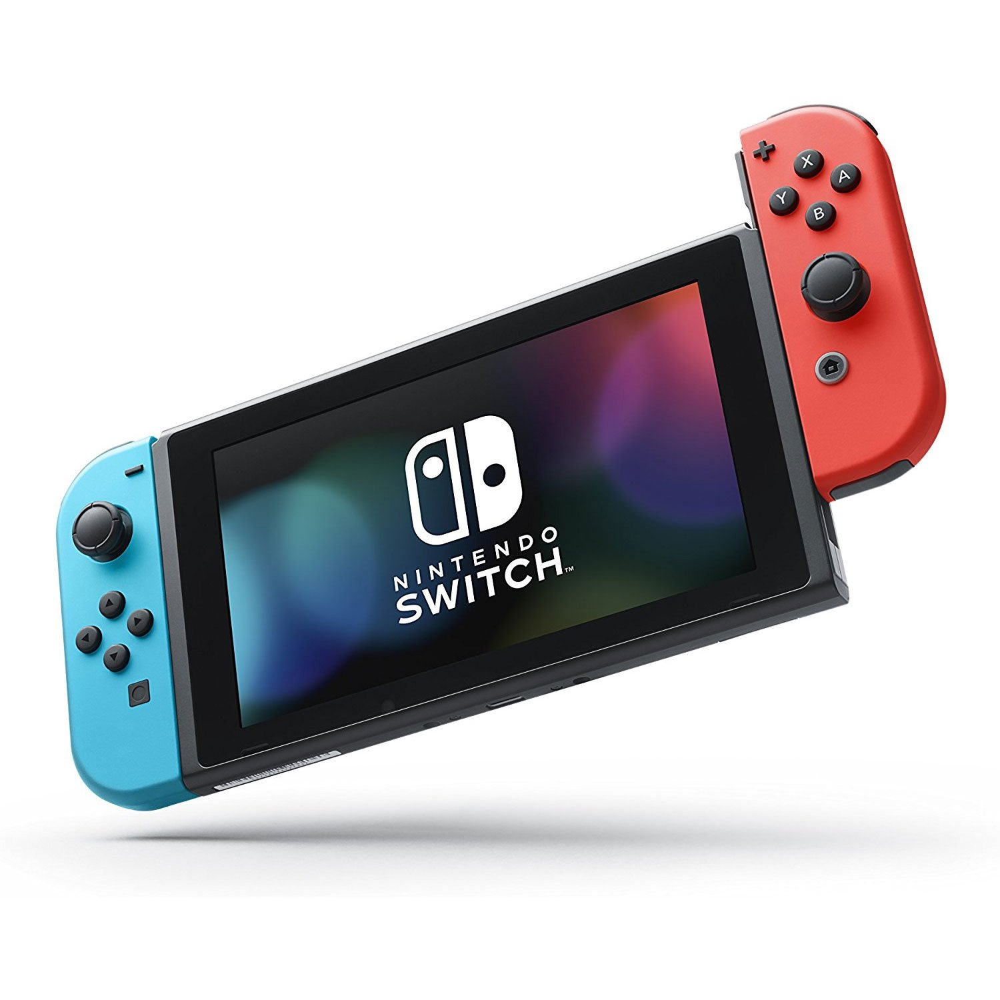
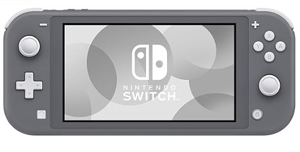
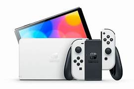
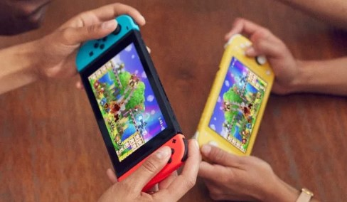
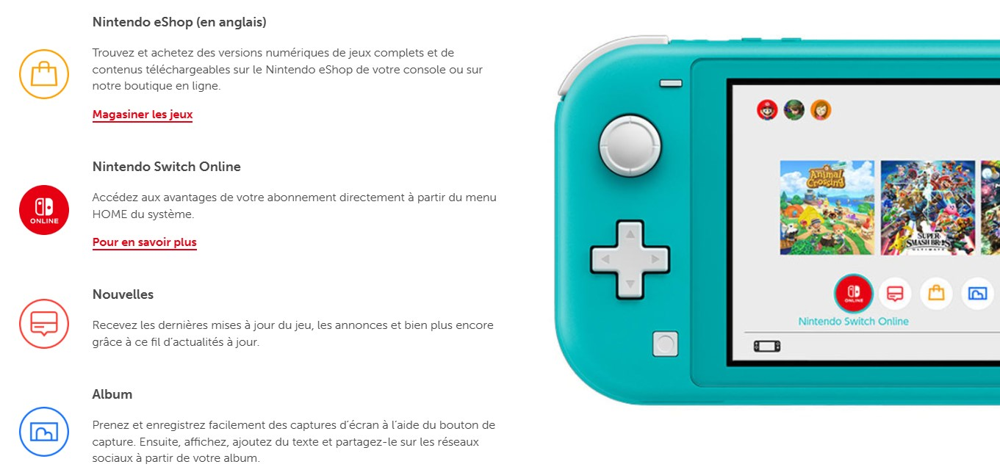

Choisissez votre Console Nintendo
Voir les consoles

Nintendo Switch
description
EN SAVOIR PLUS >

Nintendo switch LITE
description
EN SAVOIR PLUS >

Nintendo Switch OLED
description
EN SAVOIR PLUS >
Nintendo Switch

Mode TV
Branchez votre système sur la station d’accueil pour profiter des jeux HD sur votre téléviseur.
Branchez votre système sur la station d’accueil pour profiter des jeux HD sur votre téléviseur.

Mode sur table
Retournez le support pour partager l’écran, puis amusez-vous avec un jeu multijoueur.
Retournez le support pour partager l’écran, puis amusez-vous avec un jeu multijoueur.

Mode portable
Prenez-le en main et jouez avec les manettes Joy-Con™ attachées pour profiter de l’écran tactile ACL de 6,2 po
Prenez-le en main et jouez avec les manettes Joy-Con™ attachées pour profiter de l’écran tactile ACL de 6,2 po
Fonctionnalités du système

Nintendo Switch LITE

MULTIJOUEUR LOCAL
Les joueurs peuvent synchroniser jusqu'à huit consoles Nintendo Switch et jouer les uns avec les autres ou les uns contre les autres dans des jeux compatibles.
Les joueurs peuvent synchroniser jusqu'à huit consoles Nintendo Switch et jouer les uns avec les autres ou les uns contre les autres dans des jeux compatibles.
MULTIJOUEUR EN LIGNE
Si vous vous abonnez au service payant pour Nintendo Switch, vous pouvez jouer en ligne avec des amis et d'autres joueurs du monde entier
Si vous vous abonnez au service payant pour Nintendo Switch, vous pouvez jouer en ligne avec des amis et d'autres joueurs du monde entier
Mode portable
Vous pouvez jouer à tous les jeux prenant en charge le « mode portable » sur Nintendo Switch Lite. Au dos de chaque boîte de jeu se trouvent des informations indiquant si le jeu prend en charge le mode portable ou non
Vous pouvez jouer à tous les jeux prenant en charge le « mode portable » sur Nintendo Switch Lite. Au dos de chaque boîte de jeu se trouvent des informations indiquant si le jeu prend en charge le mode portable ou non
Fonctionnalités du système

Nintendo Switch OLED
Stokage
Enregistrez des jeux sur vos systèmes avec 64 Go de stockage interne, dont une partie est réservée à l’utilisation du système.
Enregistrez des jeux sur vos systèmes avec 64 Go de stockage interne, dont une partie est réservée à l’utilisation du système.
Trois mode en un
Les consoles Nintendo Switch et Nintendo Switch – OLED sont conçues pour s’adapter à votre vie, se transformant de console de salon en console portable en un clin d’œil !
Les consoles Nintendo Switch et Nintendo Switch – OLED sont conçues pour s’adapter à votre vie, se transformant de console de salon en console portable en un clin d’œil !
Amelioration de l'audio
Profitez d’un son amélioré grâce aux haut-parleurs intégrés du système en mode Table et Portable.
Profitez d’un son amélioré grâce aux haut-parleurs intégrés du système en mode Table et Portable.
Fonctionnalités du système